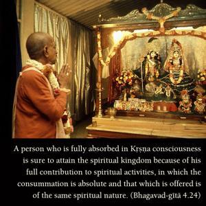
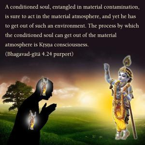
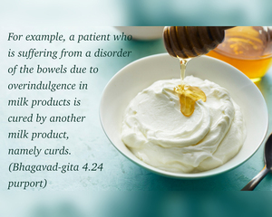
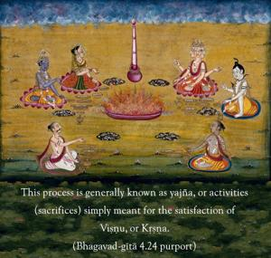

A person who is fully absorbed in Kṛṣṇa consciousness is sure to attain the spiritual kingdom because of his full contribution to spiritual activities, in which the consummation is absolute and that which is offered is of the same spiritual nature.




How activities in Kṛṣṇa consciousness can lead one ultimately to the spiritual goal is described here. There are various activities in Kṛṣṇa consciousness, and all of them will be described in the following verses. But, for the present, just the principle of Kṛṣṇa consciousness is described. A conditioned soul, entangled in material contamination, is sure to act in the material atmosphere, and yet he has to get out of such an environment. The process by which the conditioned soul can get out of the material atmosphere is Kṛṣṇa consciousness. For example, a patient who is suffering from a disorder of the bowels due to overindulgence in milk products is cured by another milk product, namely curds. The materially absorbed conditioned soul can be cured by Kṛṣṇa consciousness as set forth here in the Gītā. This process is generally known as yajña, or activities (sacrifices) simply meant for the satisfaction of Viṣṇu, or Kṛṣṇa. The more the activities of the material world are performed in Kṛṣṇa consciousness, or for Viṣṇu only, the more the atmosphere becomes spiritualized by complete absorption. The word brahma (Brahman) means “spiritual.” The Lord is spiritual, and the rays of His transcendental body are called brahma-jyotir, His spiritual effulgence. Everything that exists is situated in that brahma-jyotir, but when the jyotir is covered by illusion (māyā) or sense gratification, it is called material. This material veil can be removed at once by Kṛṣṇa consciousness; thus the offering for the sake of Kṛṣṇa consciousness, the consuming agent of such an offering or contribution, the process of consumption, the contributor and the result are – all combined together – Brahman, or the Absolute Truth. The Absolute Truth covered by māyā is called matter. Matter dovetailed for the cause of the Absolute Truth regains its spiritual quality. Kṛṣṇa consciousness is the process of converting the illusory consciousness into Brahman, or the Supreme. When the mind is fully absorbed in Kṛṣṇa consciousness, it is said to be in samādhi, or trance. Anything done in such transcendental consciousness is called yajña, or sacrifice for the Absolute. In that condition of spiritual consciousness, the contributor, the contribution, the consumption, the performer or leader of the performance and the result or ultimate gain – everything – becomes one in the Absolute, the Supreme Brahman. That is the method of Kṛṣṇa consciousness.